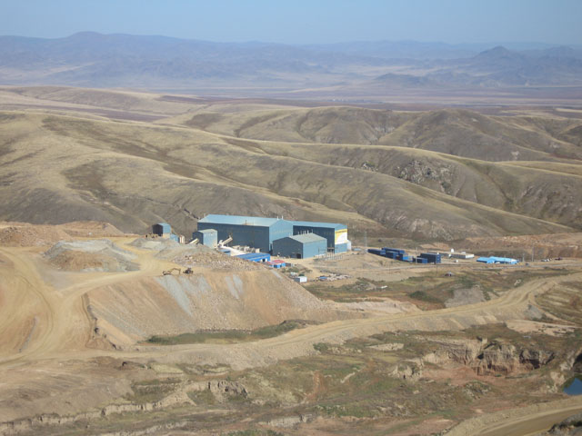
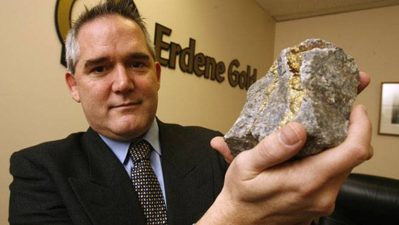
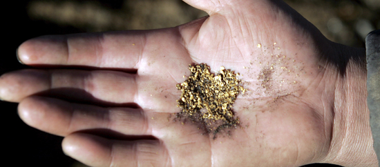

Gold Production
In recent years, gold mining has emerged as on of the most dynamic sectors of the Mongolia's economy. Gold production has grown ten-fold from 1993 to 2003, with 11.1 metric tons of gold having been produced in 2000. Gold production is expected to continue to increase annually for the foreseeable future as a result of new exploration and investment. A total of 18 gold ore zones such as Khentii, Bayankhongor, Kharkhiraa, and Khangai mountain range have been determined in Mongolia. There are 152.6 tons of explored gold reserve in the country, of which 90.6 tons are in the Tuul, Bayangol, Arnaiman, Ult and Toson placers and 62 tons are included in the Boroo, Sujiglei and Tavt basic deposits. As a result of the Mongol Gazar and Gachuurt companies' exploration and research ac-tvities, large scale gold reserves of the Kharguit, Shiirt and Zuun Sadat deposits in Tsenkher and Bat-Uul soums of Arkhangai and Uuirkhangai aimags were discovered and registered in the state reserve book.
The gold extraction of Mongolia increased by 14.7 times in the last 10 years. Also copper ore extraction and concentrate production increased by 30.4 per cent, and fluorspar concentrate production increased by 14.6 percent. This sector is leading other fields by its output production and investment amount. The Mongolian government is paying more attention to implementation of the gold program along with intensively controlling the gold extraction process of enterprises and organisations. The gold program is also aiming to improve techniques and technology, and decrease waste. The gold extraction and export of the country have been increasing year by year.
The Canadian Boroo Gold Company, engaged in gold and mining exploration, was named Top Company of 2003 and as the leading company in the mining sector. It has been estimated that the impact of Boroo will represent 5 to 7% improvement to the GDP of Mongolia. The capital cost of development and construction of the project was $75 million equivalent to 88 billion tugrigs.
The Boroo hard rock deposit was discovered in the early 1900's however it was only explored extensively in the 1980's by a Mongolian - East German joint venture. The property has been held by several parties since but acquired by Altai Holding Company in 1997.
The start-up of the Boroo Gold Mine represents the first hard rock gold deposit to be developed and brought into operation in Mongolia and the largest foreign investment of its kind. The project has undergone development and construction during 2002/03, and culminated in the first gold bar being poured in December 2003 and achievement of commercial production on March 1, 2004.
Boroo began commercial production on March 1, 2004 and produced more than 245,000 ounces of gold (including gold produced during commissioning) by year-end. Over the next five years, the Boroo open-pit mine is expected to process more than 1.75 million metric tonnes of ore and produce more than 30 tonnes or an average of 180,000 ounces of gold per year at a total cash cost of $170 per ounce.
The Boroo gold deposit is generally flat lying or sub-horizontal and extends over an area measuring 2.5 by 1.5 kilometres. Throughout the area, a series of mineralized zones occur up to 400 metres wide and typically average from 10 to 30 metres in thickness. The deposit contains more than 10 million tonnes of probable reserves at an average grade of 3.5 grams per tonne and containing 1.15 million ounces of gold.
The Boroo mining operations are based on conventional open-pit methods to mine 6,500 tonnes per day of ore. Waste tonnage stripping rate is currently higher than the remaining life-of-mine strip ratio of 3.7, but will incrementally decrease from 42,000 tonnes per day in 2006 to 35,000 and 12,000 tonnes per day in 2007 and 2008, respectively.
At the end of March 2007, drilling by IMMI had established that the Oyu Tolgoi deposits contained 987 tonnes of gold (31.6 million ounces). Investors of the Oyu Tolgoi project expect that it will come into production in 2011 and reach production levels of 320,000 ounces of gold per year.